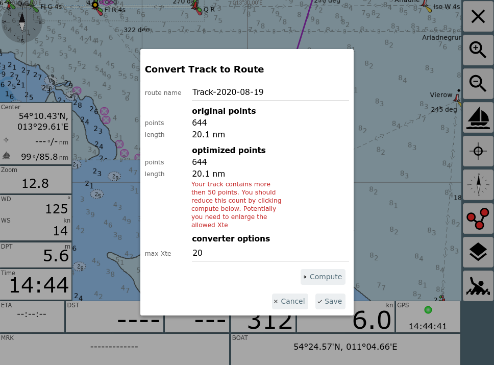
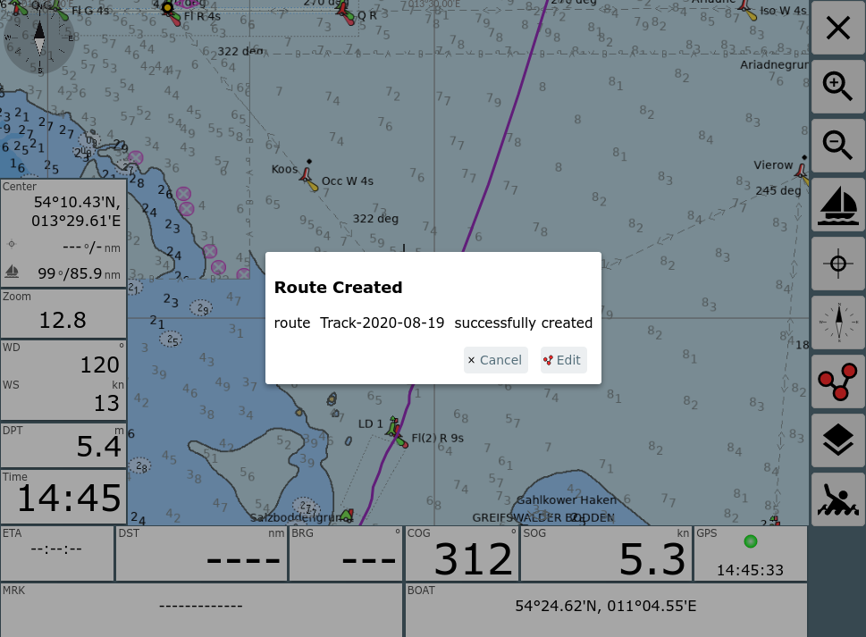
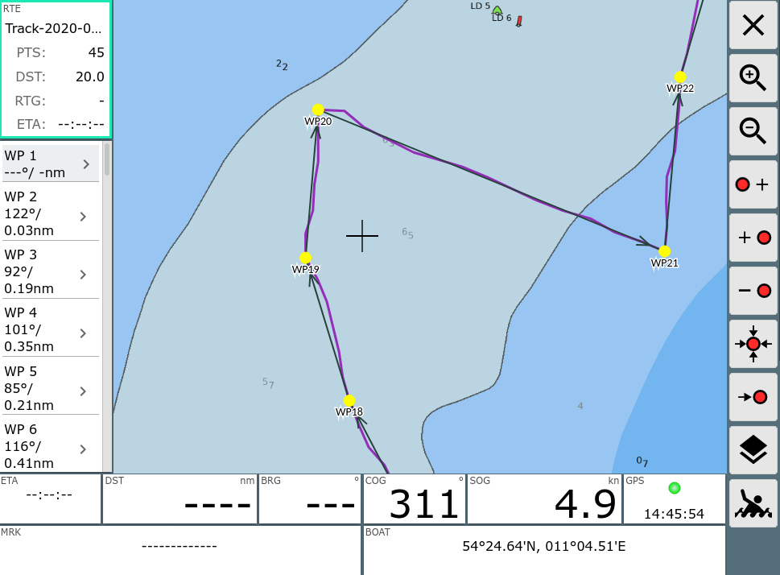

AvNav zeichnet permanent Tracks auf. Für jeden Tag wird eine neue gpx Datei mit dem aktuellen Datum geschrieben.
Diese Tracks (oder auch Tracks, die auf der Files/Download Seite hochgeladen wurden) können in Routen umgewandelt werden, um sie zur Navigation zu nutzen.
Für diese Umwandlung ist es typischerweise nötig, die Zahl der Punkte im Track zu verringern (Tracks haben oft weit über 1000 Punkte). Sonst ist eine sinnvolle Nutzung einer solchen Route kaum möglich.
AvNav nutzt dazu ein Reduktionsverfahren, das an GPS Babel angelehnt ist. Es werden nacheinander die Punkte entfernt, bei denen die Abweichung zur neu entstehenden Strecke zwischen den Nachbarpunkten am kleinsten ist.
Man kann für dieses Verfahren eine maximale Abweichung (xte) angeben, die man tolerieren möchte. Je größer man diese zulässige Abweichung wählt, um so weniger Punkte bleiben am Ende übrig. Man sollte typischerweise versuchen, Routen auf ca. 50 Punkte zu begrenzen.
Nach der Umwandlung kann man die Route im Routen-Editor ggf. noch etwas nachbearbeiten.
Man kann den Dialog für die Konvertierung entweder von der Files/Download
Seite aus dem Track Info
Dialog erreichen ( Convert
Button) oder aus dem Info Dialog, falls man einen Track als Overlay
auf der Karte hat, und einen Punkt in diesem anklickt. Im Info Dialog
wieder den
Convert
Button) oder aus dem Info Dialog, falls man einen Track als Overlay
auf der Karte hat, und einen Punkt in diesem anklickt. Im Info Dialog
wieder den  Convert
Button nutzen - siehe Bild.
Convert
Button nutzen - siehe Bild.

Nach Klick auf den Convert Button erhält man den Konverter-Dialog.
Wie im Bild zu sehen, wird man typischerweise eine Warnung bekommen, dass die Anzahl der Punkte über 50 liegt.
Über max Xte stellt man die maximal zulässige Abweichung ein und kann mit "Compute" eine Konvertierung starten. Falls das Ergebnis (Zahl der Punkte) noch nicht passend ist, kann man mehrere Durchläufe machen, mit veränderter Abweichung.

Im Beispiel wurde mit einer Abweichung von 22m eine ausreichend kleine Route erstellt.
Man kann im Dialog noch den Namen der enstehenden Route ändern (und ggf. entscheiden, ob eine bestehende Route gleichen Namens überschrieben werden soll).
Nach dem Speichern kann man ggf. die enstandene Route direkt bearbeiten.
Hier ist es von Vorteil, wenn man den Track vorher als Overlay auf der Karte hatte, dann kann man jetzt leicht vergleichen, ob die Route alle wichtigen Punkte enthält.
